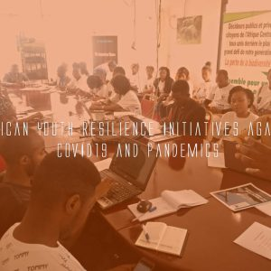
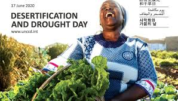
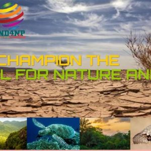
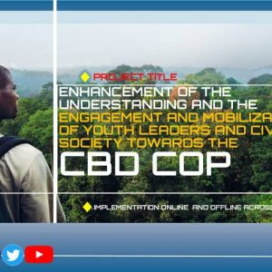
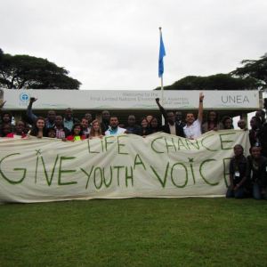
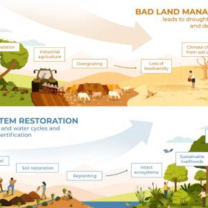

 Initiatives de résilience des jeunes africains contre le COVID19 et les pandémiesExpired L'Afrique et le monde sont aux prises avec la pire ... 26 Mai 2020 All Day En ligneVia Zoom, Facebook et YouTube
 Célébration de la Journée mondiale de la désertification 2020 ANYL4PSDExpired Quand le sol demande de l'aide La désertification est la dégradation ... 17 Juin 2020 8 h 00 min - 18 h 00 min
APPEL MONDIAL À CONTRIBUTIONS ET À COLLABORATION POUR LA MISE EN ŒUVRE D’UN COURS EN LIGNE OUVERT MASSIF (MOOC) SUR LE NOUVEAU PACTE POUR LA NATURE ET LES PERSONNESExpired Le continent africain connaît un rythme de développement économique rapide ... 06 Nov 2020 - 30 Juin 2021 8 h 00 min - 18 h 00 min
 NOUVELLE OFFRE POUR LA CAMPAGNE NUMÉRIQUE NATURE AND PEOPLEExpired Le contexte: Le commerce mondial et la croissance économique au cours ... 12 Jan 2021 All Day NumériqueZoom, YouTube, twitter, Facebook, WhatsApp, Telegram, Instagram….
 Amélioration de la compréhension, de l’engagement et de la mobilisation des jeunes leaders et de la société civile en faveur de la COP CDBExpired Le Plan stratégique 2010-2020 de la Convention sur la diversité ... 27 Jan 2021 AfriqueAfrique
 SIDE-EVENT: ASSEMBLÉE ENVIRONNEMENTALE DES JEUNES DURABILITÉ ET DROITS DE L’HOMME: Au-delà du droit environnemental et du changement climatique!Expired Arrière-plan L'Assemblée des jeunes pour l'environnement est le forum officiel des ... 20 Fév 2021 11 h 00 min - 12 h 00 min
 Pôle de croissance verte de la jeunesse africaine et de la société civile: de la pandémie à l’Agenda 2030, mobilisé pour le changementExpired Le 31 mai 2020 a été publiée la déclaration et ... 28 Sep 2022 9 h 30 min En ligneVia Zoom, Facebook et YouTube